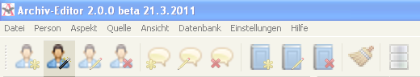
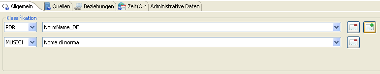
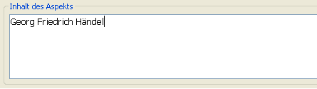
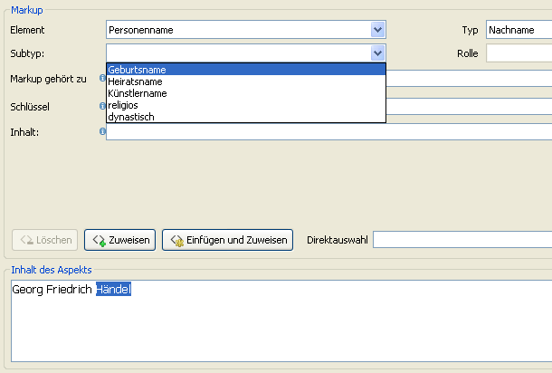
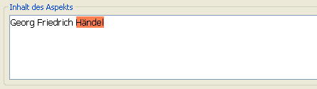
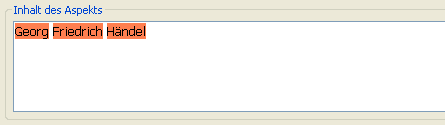

Bevor einzelne Informationen über Georg Friedrich Händel in Form von Aspekten gesammelt werden können, muss zunächst eine neue Person angelegt werden. Dies geschieht durch Klicken auf das Icon, welches eine Person und einen Zauberstab beinhaltet, links oben in der Leiste.

Es öffnet sich der Aspekt-Editor, in den wir die erste Information - den Namen - eintragen wollen.

Zuallererst wird die semantische Klassifikation um eine für das Vorhaben wünschenswerte Kategorisierung erweitert. Über den Button, auf dem das grüne Plus abgebildet ist, lässt sich die in diesem Beispiel sinnvolle Ergänzung "‘Nome di norma"’ für das bearbeitende Vorhaben "‘Musici"’ wählen.

Anschließend wird der Inhalt des Aspektes im gleichnamigen Textfeld ganz unten festgehalten. Dieser besteht nur aus dem Namen, der hier eingegeben wird.

Nun wird der Text mit Hilfe von Makups mit Metadaten versehen. Dabei sollen der Nachname und die beiden Vornamen als solche zugewiesen werden, wobei die Vorgehensweise identisch ist. Nachdem durch Maus oder Tastatur der Nachname "‘Händel"’ markiert wurde, wählen wir als Markup unter dem Element "‘Personenname"’ den Typ "‘Nachname"’ und den Subtypen "‘Geburtsname"’ an.

Durch den mit "‘Zuweisen"’ beschrifteten Button wird das markierte Wort "‘Händel"’ als Nachname deklariert und mit roter Farbe hinterlegt.

Bei den beiden Vornamen wird nun analog vorgegangen. Für "‘Georg"’ wird als Typ entsprechend "‘Vorname"’ und der Subtyp "‘erster"’ gesetzt.

Nachdem das Markup für den ersten Vornamen "‘Georg"’ zugewiesen wurde, wird der zweite Vorname "‘Friedrich"’ ebenso, jedoch mit dem Subtyp "‘zweiter"’, deklariert, so dass der Inhalt des Aspektes am Ende folgende Gestalt hat:

Als nächstes muss mindestens eine Quelle bestimmt werden. Dazu wird im entsprechenden Reiter das im Editor bereits angelegte Buch "‘Buchtitel"’ von August Reissmann mit einer Zuverlässigkeit von "‘sicher"’ ausgewählt.

Nun kann der Aspekt über den entsprechenden Button am unteren Rand gespeichert werden. Die Person wird dadurch angelegt und ist fortan bei "‘Alle Personen"’ links unter dem Buchstaben "‘h"’ gelistet und beinhaltet bereits einen Aspekt, welcher den Namen Händels beinhaltet.